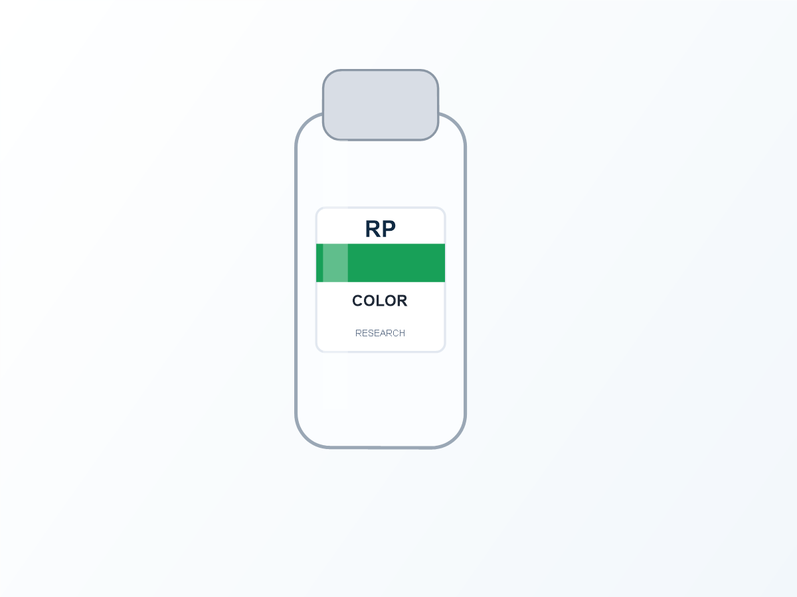

When a product line grows from one vial to five or ten, buyers stop choosing labels one at a time. They need a system. A color-coded series makes the family easier to scan, pack and reorder, but it only works when color is governed by a simple rule rather than added randomly to each new design.

Assign color to a stable product rule
Use color to signal one meaningful difference: product family, strength tier, formula type, sample versus retail pack, or another buyer-controlled category. Avoid using one color for several unrelated meanings. The best system lets a person recognize the group quickly, then confirms the exact SKU through the product name and code.
| Primary color | Use it as the main cue for one SKU group or product family. |
|---|---|
| Product name and code | Keep these readable even when colors are viewed in poor light or by people with different color perception. |
| Batch and QR panel | Reserve a calm contrast area so changing data remains practical to read or scan. |
| Matching box | Repeat the same cue on the box while using its larger area for added information. |
Keep a fixed layout while the color changes
Changing every design element for each SKU creates a line that feels improvised. A more useful approach is to hold the logo position, product-name hierarchy, batch zone and QR location steady. Change the approved color band, icon or accent for each SKU. This speeds proof review and makes a future reorder much less fragile.


Color series checklist
- SKU list with the difference each color is meant to signal
- One approved color reference for every product family
- Fixed logo, product-name, batch and QR positions
- Vial dimensions and matching box dimensions
- Contrast check for small text on every color variant
- Saved proof and roll specification for future reorders
Do not make color carry all the responsibility
A colored cap, label band or box panel is helpful, but no one should have to identify a small vial from color alone. Use a readable product name, a short code and a consistent placement. This makes the packaging more robust during packing, fulfillment and customer handling.
Plan the first order as the master template
Once the layout and color rule are approved, record the label size, material, finish, roll direction and current color references. The next SKU can then inherit the system instead of reopening every production decision. RP can prepare a free digital proof from a SKU list, bottle photo and any existing artwork direction.
Build a color system that scales
Send your SKU names, vial size and any existing brand files. We can help organize the visual hierarchy into a practical vial and box label series.
Chat on WhatsAppFAQ
How many colors can a peptide vial series use?
Use only as many as your team can apply consistently. The product code and name should still make each item identifiable without color.
Can a premium holographic finish be part of a color-coded series?
Yes, but keep the core information panel stable. Reflective material should not reduce the contrast of product names or variable fields.
Can one proof cover multiple SKU colors?
It can show the shared layout, but each final color version should be checked before production approval.